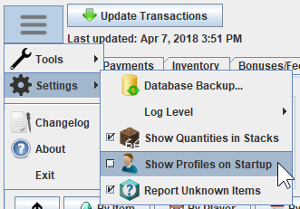
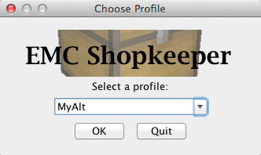
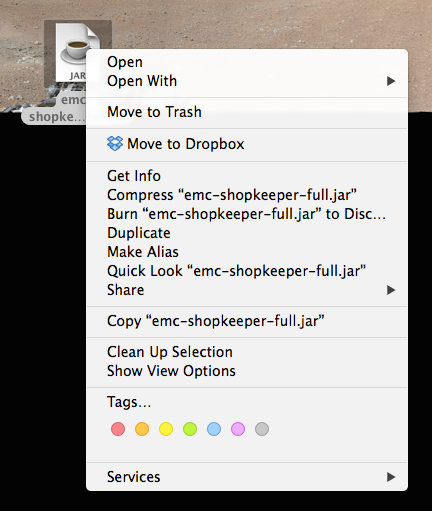
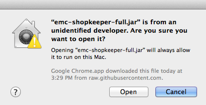

Overview
EMC Shopkeeper is a program that helps you keep track of your in-game shop transactions on the Empire Minecraft server. Find out how many rupees you've made, what items sell the best, and who your best customers are!
Screenshots
FAQ
What's the difference between the two download options?
The auto-runner ensures that you are always running the latest version of EMC Shopkeeper. Every time it launches, it checks for a new version, and downloads it if one is available. But occasionally, the auto-runner file itself ("emc-shopkeeper.jnlp") has to be updated, in which case you'll have to manually download a fresh copy. The downside to using the auto-runner is that it requires additional security rights which some computers block.
The full JAR file can be run on any computer. The downside to this is that it does not automatically update like the auto-runner does. If an update is available, EMC Shopkeeper will tell you when it starts up, in which case you will have to download the new JAR file manually.
I clicked on "Auto-Run", but all I see is a bunch of weird text.
This is because the file is being opened by your web browser instead of by Java. Go to "File > Save" and save the file somewhere on your computer. Then, right-click the file and select "Run As > Java" (or some variant thereof).
When I run EMC Shopkeeper, it's warning me that EMC Shopkeeper may harm my computer. Will it?
EMC Shopkeeper is virus and malware free. It will not harm your computer. But while EMC Shopkeeper is safe, not all JAR files are safe! As always, you should exercise extreme caution when downloading software from the internet.
Why does EMC Shopkeeper need my EMC password? Will you steal it?
EMC Shopkeeper needs your password into order to logon to your EMC account and download your rupee transaction history. Your password is not logged, recorded, or stolen in any way. If you select the "Save password" checkbox when entering your credentials into EMC Shopkeeper, it will save your password to your hard drive.
If you feel unsafe about giving EMC Shopkeeper your password, you can change your password temporarily, and then change it back when you are done using EMC Shopkeeper.
How do I download the transactions of my alt account?
If you have alt accounts and would like to download the transaction histories for them as well, you will need to create separate profiles for them. Do NOT simply enter different login credentials at the login prompt when you click the "Update Transactions" button! Each profile is only designed to hold the transactions of a single account.
To load EMC Shopkeeper under a different profile, run the following steps:
- Click on the "main menu" button in the upper-left corner, point to "Settings", and click "Show Profiles On Startup".
 - Close EMC Shopkeeper and re-open it.
- A profile dialog will appear. Type in the name of your new profile, then click "OK".

I'm on a Mac and I can't use the auto-runner!
You may have trouble auto-running the application if you're on a Mac. That's because EMC Shopkeeper is not signed with a certificate from an official certificate authority. In this case, you will need to download the full JAR file instead.
I'm on a Mac and I can't run the JAR file!
Double-clicking the JAR file may display a security warning, which prevents you from running it.
To get around this, do the following:
- Right-click on the JAR file.
 - Select "Open" while holding down the "Control" key
- Click the "Open" button at the warning dialog.

You only have to do this once, and then once again every time the file changes (i.e. when you update EMC Shopkeeper).
How do I transfer all my transaction info to another computer?
EMC Shopkeeper stores all of its data in a directory called ".emc-shopkeeper", located in the root of your user directory. Simply copy this directory to the user directory of the other computer and you're set! Below is the full path to the directory in each operating system (replace "USERNAME" with your username):
- Windows XP and below:
C:\Documents and Settings\USERNAME\.emc-shopkeeper - Windows Vista and above:
C:\Users\USERNAME\.emc-shopkeeper - Mac OS X:
/Users/USERNAME/.emc-shopkeeper - Linux:
/home/USERNAME/.emc-shopkeeper
Changelog
- Item name fixes.
- Player supporter status and titles are now displayed correctly when you view transactions by player.
- The chat log viewer now correctly color-codes the community chat channel.
- Tweaked the chat log viewer's UI to improve usability.
- Added a menu item for opening the profile folder: [ Tools > Open Profile Folder... ]
- Renamed a menu item: [ Tools > Log... ] renamed to [ Tools > Show Application Log... ]
- Fixed a bug that prevented the app from reading its own error log.
- Fixed a bug that would cause the app to crash on Mac if the user tried to quit the app while the splash screen was still visible.
- Item name fixes.
- Fixed bug that caused an update to fail if a payment transaction's reason was too long.
- Fixed a bug that prevented player transactions from being exported.
- Added 1.12 items.
- Item name fixes.
- Added "Highest Balance" statistic to Bonus/Fees tab. This shows the highest rupee balance you've ever had.
- Added "Rupee Balance" chart to Charts tab. This graphs your total rupee balance over time.
- Item name updates for 1.10 and 1.11 (plus other misc item name fixes)
- Fixed a bug that occurred if you left some fields blank in the "Database Backup" dialog.
- Fixed a bug that crashed the program if an item name greater than 128 characters was downloaded from your transaction history.
- Item name fixes.
- Item name updates.
- Fixed problems with database update code. Should run faster now.
- Added 1.9 items.
- Added some promos.
- Added new potion names (potions no longer use IDs in 1.9).
- Fixed a problem that prevented users from logging in.
- Fixed a problem that prevented the "View by Transactions by Date" view from working.
- Fixed a problem where it would fail to update your transactions after EMC Shopkeeper has been open for a long time.
- Fixed/added some item names.
-
Completely re-worked the code that downloads the rupee transactions from EMC:
- Moved it into its own library (see: http://github.com/mangstadt/emc-rupee-transaction-downloader)
- Returns pages in sequence instead of whichever downloaded first.
- Ignores duplicate transactions. You don't have to set move perms to false on your res anymore in order to prevent new transactions appearing while you are downloading them.
- A warning is now shown if you change the username at the login screen. It informs you that you must create a new profile if you want to download the transactions for another account (such as an alt account).
- Items like "Bow-eo0f" now have icons.
- Fixed some item names.
- Updated a lot of the dependency libraries that EMC Shopkeeper uses.
- Fixed an issue where payment transactions without reasons weren't being parsed correctly.
- Fixed/added some item names.
- Changed "Redstone Comparator" to "Comparator".
- Fixed the stack value of Armor Stands.
- Add some promos and other items to the item list.
- Fixed a bug that prevented the user from re-logging in if the current session token became bad.
- Added 1.8 items.
- Added a checkbox to the login dialog to save your password (idea from ttyler333).
- The "Date Range" and "Transaction Type" settings on the Transactions tab are now persisted (idea from ttyler333).
- Added a feature that will automatically report to me any item names that EMC Shopkeeper does not recognize. This will help me add icons for unknown items. This service is opt-in. To enable it, go to [Menu > Settings > Report Unknown Items]
- Optimized all item images to help improve performance.
- Added support for payment transaction reasons.
- Removed the menubar and replaced it with a "three bar menu" button.
- Added a feature where the "PPU" numbers will turn red if the "buy" value is less than the "sell" value. This could mean that you are selling an item for less than you are buying it.
- Fixed a bug where some player's titles were not being parsed correctly from their profile page.
- The window state is now more accurately persisted. Before, it only remembered the height and width of the window, but now it remembers that plus the location and the state (maximized/minimized).
- Changed the window icon.
- Fixed the "Spruce/Pine Slab" item icon.
- Added a "PPU" (price per unit) column to the items table that shows how much an item costs to buy/sell it (calculated from the buy/sell quantity and buy/sell amount of each item).
- Added borders to the splash and update dialogs to make them look nicer.
- Added the ability to display "My Shop" and "Other Shop" transactions combined.
- Added an icon for enchanted books.
- Fixed the stack value of Horse Eggs (used to be 64, now is 1).
- Fixed a bug where "Shops Visited: null" would be displayed when searching by items with the "Other Shop" transaction type.
- Fixed a bug where groups weren't being displayed on the Charts tab.
- Fixed a bug where player names sometimes wouldn't be displayed in the correct color.
- Fixed a bug where an error would occur if one of the date values in the Transactions tab was empty.
- Fixed a bug that caused bonus/fee transactions to be counted multiple times under certain conditions.
- Added item name mappings for some EMC-exclusive items (such as Marlix's Armor and Freedom Blade).
- Added a chat log viewer.
- Added the ability to find a payment transaction in the chat log. This help you to remember what the payment transaction was for if you forget.
- Added totals for rupees lost/gained next to the "Net Total" count at the bottom of the screen.
- Improved caching of profile pictures for better performance.
- Fixed the stack value for eggs (used to be "1", but is now "16")
- Added the ability to merge multiple payment transactions from the same player into a single payment transaction.
- Added the ability to specify the transaction type when assigning a payment transaction.
- Fixed a bug that prevented items with long names from being added to the database.
- Fixed a bug where the tables weren't displaying the player portraits after being downloaded.
- Fixed a bug that could prevent the generic error dialog from being displayed.
- Improvements to the Inventory tab:
- Added the ability to view items by category.
- Added the ability to specify when an item should be considered "low in stock". You can then view all "low in stock" items by selecting the "low in stock" category.
- Made it easier to edit your inventory. You can now click on a value in the table to edit it.
- Fixed a bug that prevented the data from being exported to BBCode.
- Fixed a bug that prevented the "Item Name" textbox from clearing after adding a new item.
- Made performance improvements to all table controls.
- Removed the "Remember Me" checkbox from the login dialog since it never really worked properly.
- Fixed some item name mappings.
- Added the ability to view the purchases you made with other shops.
- Improved the layout of the "Transactions" tab.
- Added a cooler loading screen.
- Added 1.8 item mappings.
- Fixed some item name mappings.
- Fixed a bug that prevented the app from starting up correctly.
- Player names are now colored according to supporter level.
- Added icons that show the server that each player is currently connected to.
- Added mail fees to the Bonus/Fees tab.
- Fixed some item name mappings.
- Added the ability to backup and restore your EMC Shopkeeper database.
- Fixed some item name mappings.
- Fixed a bug where the user's inventory wasn't being updated correctly during a database update under certain circumstances.
- Fixed a bug that caused the timestamps of some transactions in the "By Date" view to be off by a minute or two.
- Fixed a bug where negative payment transactions weren't being split properly.
- For Macs, the menu bar now displays "EMCShopkeeper" instead of "Main".
- Cleaned up the layout of the BBCode export format.
- Fixed some item name mappings.
- Added the ability to view transactions by date, much like EMC's rupee history page.
- Significantly improved the performance of downloading player profile pictures.
- Added item icons for Tripwire Hooks, Dragon Stones, and Dragon Stone Fragments.
- Fixed a bug that prevented the timer from starting on the Update dialog.
- If a connection error occurs during an update, it will attempt to re-create the connection before displaying an error.
- Fixed a "SQLException" bug that prevented old database versions from being updated during startup.
- Fixed the "0 rupees" bug.
- Increased the connection timeout for downloading transaction pages, so large transaction pages (~12,000 and above) don't timeout.
- If an error occurs during the first update, you are now given a choice between saving the transactions or discarding them (before, it would always discard them).
- Fixed a rendering glitch in the Update dialog
- Added a "Stop" button to the Update dialog. This halts the update process and saves all transactions that were downloaded (unlike the Cancel button, which discards the transactions). It only appears during the first update.
- Increased the request timeout for downloading transaction pages, so large transaction pages (~12,000 and above) don't timeout.
- Cleaned up the layout of the First Update dialog.
- Added icons for mob player heads and other items.
- Added a better splash screen.
- The splash screen is now displayed for people who use the auto-runner.
- Added a side-bar to the "players" view in the Transactions tab that lists all of the players.
- Added separate counts for shop, payment, and bonus/fee transactions to the Update dialog.
- Added an "Apply to inventory" checkbox to the "Assign" dialog of the Payments Tab. When checked, the item quantity will be applied to your Inventory.
- Fixed a "SecurityException" error that some people reported getting.
- Fixed a bug that caused the first transaction page to be parsed twice.
- Added the Charts tab.
- Fixed a bug where the "total transactions parsed" count that is displayed after an update was double what it should be.
- Added an option to display item quantities in stacks.
- Fixed some item name mappings.
- Added the ability to upload an error report when an error occurs.
- Fixed some item name mappings and added more item icons.
- Added the "Bonuses/Fees" tab, which keeps a tally of the rupee bonuses and fees your account has received.
- Fixed some item name mappings.
- Added icons for stained glass.
- In the "Inventory" tab, you can now add to the quantity of an existing item by prepending the quantity value with a "+". For example, "+1/" would add one stack to an item.
- Redesigned the entire user interface.
- Added an "Inventory" screen, which lets you know when your shop chests are getting low.
- Added the ability to choose a profile on startup.
- Added the ability to show transactions from the date of the previous update.
- Added the ability to search over all transactions in your history.
- An alert will now appear when a new version of EMC Shopkeeper is available (for people who use the full .jar file instead of the auto-runner).
- Fixed a bug where the net total wasn't displaying.
- Added the ability to sort transactions by clicking on the column headers.
- Fixed a bug where the list of items was not being regenerated after a database reset.
- Added the ability to assign multiple items to a single payment transaction.
- Added the forum thread's URL to the About dialog.
- Fixed a bug where some item names appeared twice in the payment transactions dialog.
- Added friendlier names for potions and other items. For example, "Potion:8193" now displays as "Potion of Regeneration".
- The auto-suggest box in the payment transactions dialog now displays a wider range of items (before, it just displayed items from your transaction history).
- Added the ability to ignore old payment transactions during the first update.
- Fixed the scaling of item icons that do not have equal height and width.
- Added more item icons, including icons for 1.7 items.
- Improvements to the command-line interface.
- Fixed the "NullPointerException" issue people were getting (hopefully).
- Added more item icons.
- Added more item icons.
- Added some missing item icons.
- An error message is now displayed if the start date does not come before the end date.
- Added the player's current rupee balance.
- Added the EMC logo.
- Added some missing item icons.
- Improvements to player portrait downloading.
- Fixed a bug where a player's "first seen" date was not being calculated correctly.
- Added the ability to treat manual payment transactions ("/r pay") as shop transactions.
- Added the ability to clear the saved login session ("Tools > Clear Saved Session").
- Added a place-holder image for when a player's profile portrait cannot be downloaded.
- Fixed a bug where certain player profile portraits were not being downloaded correctly.
- Fixed dialog boxes so they are centered better on the screen.
- Added the ability to group transactions by player.
- Added the ability to sort and filter the items table.
- Addressed an issue where the login dialog would repeatedly appear, despite the fact that the user entered valid credentials.
- Addressed an issue where users would get a "NullPointerException" while performing an update.
- Separated out the "quantity" and "rupee" values of the "sold", "bought", and "net" columns into columns of their own.
- Added more item icons.
- Added an app icon.
- Added Mac menubar integration.
- Changed the way the database was wiped to prevent non-database files from being deleted.
- Fixed a bug that prevented an update from stopping if the first transaction on page 1 is not a shop transaction.
- Added the ability to specify which page to stop on while performing the first update. This is useful for players with large transaction histories. Includes an estimate for how long the update is expected to take.
- Added logging capabilities for debugging future problems.
- Added the ability to wipe the database.
- Initial version.